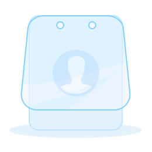

没有患者数据
请在导航栏选择你要查看的患者
所在的团队、基本流程

{{item.pname}} {{item.gender}} {{item.age}}岁
{{item.bedInfo}}
手术日期:{{item.optTime | date:'yyyy-MM-dd'}}
诊断:{{item.diagnose}}
{{item.bedInfo}}
手术日期:{{item.optTime | date:'yyyy-MM-dd'}}
诊断:{{item.diagnose}}